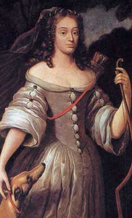
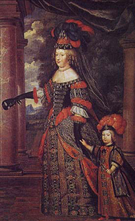
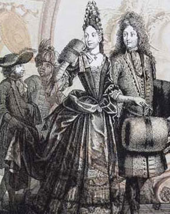
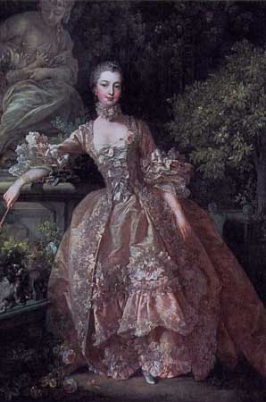
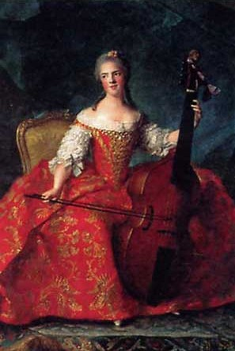
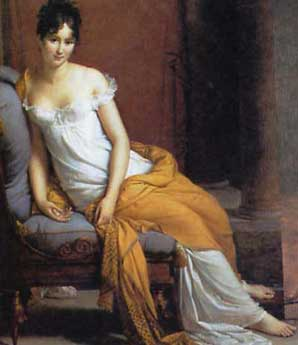

|
Корсет
Франции
XVII - XVIII веков
|
||
|
В годы правления Людовика XIV, на пике абсолютизма, и французская
мода становится абсолютным монархом. Её власть переходит границы Франции.
Моду этой эпохи называют версальской - по имени любимой резиденции короля.
|
||
 |
Первая
половина XVII в.
|
 |
| Ж.Нокре. Герцогиня де Лавальер в образе богини Дианы. 1661 г. Версаль. | ||
| Во
второй половине XVII в. Изменился силуэт костюма в профиль. Форма такой фигуры создавалась с помощью корсета. Новый корсет(=>) создавал спереди красивую полукруглую линию. Спереди и сзади он имел две металлические пластины. Изгиб этих пластин определял положение корпуса женщины. Декольте уменьшилось и приобрело форму каре. |
 |
|
| Никола Боннар. Галантная пара на прогулке. 1693 г. Национальная библиотека. Париж. | ||
 |
В
эпоху рококо (1730 – 1789) корсет
с фижмами вместе с кринолином составлял основу выходного дамского костюма. |
 |
| Франсуа
Буше. Маркиза де Помпадур. 1759 г. Коллекция Уоллес. Лондон. |
Жан Марк Натье. Мадам Генриетта с виолончелью. Фрагмент. 1754 г. Версаль | |
 |
На изменение моды в
конце ХVIII века повлияло увлечение
античностью, что привело к упрощению покроя и отказу от широких юбок с
кринолинами. |
|
| Франсуа Жерар. Мадам Рекамье. 1805 г. Музей Карнавале. Париж. | ||
|
Вопросы
для самопроверки
|
||
| 1.
Как называют моду этой эпохи? 2. Какие отличительные черты имел корсет в первой половине XVII века? 3. Что представлял собой корсет второй половины XVII века? 4. Какие особенности имел корсет в эпоху рококо? 5. В какой период времени корсет ненадолго выходит из моды? 6. Когда корсет удлиняется и охватывает нижнюю часть туловища? |
||